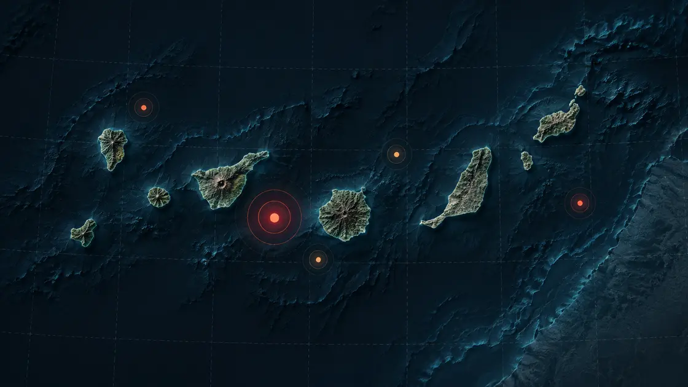
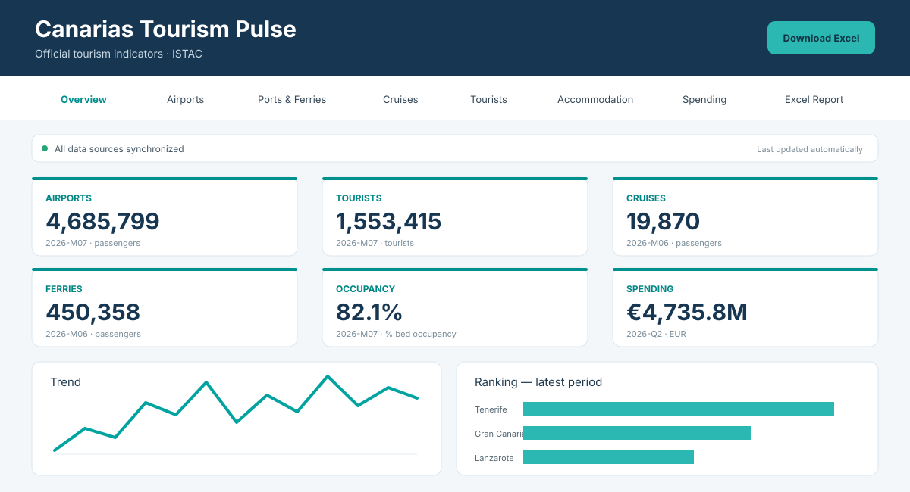

Automation
Automate repetitive operational work and event-driven workflows.
File & folder monitoringReports & scheduled jobsBackups & processing
We build practical automations, data systems and AI-powered tools that remove repetitive work and connect the systems you already use.
From simple automations to AI assistants and data applications — the technology depends on the problem.
Automate repetitive operational work and event-driven workflows.
Turn raw data into useful monitoring, analysis and reporting tools.
Use language models where they actually improve the workflow.
Connect AI assistants with tools, data and controlled actions.
Make services and internal systems work together automatically.
Finished projects showing how the broader capabilities above look in a real system.

An automated seismic monitoring dashboard using official IGN earthquake data. It combines scheduled data ingestion, CSV history, geographic classification and interactive Plotly visualizations.

An automated tourism dashboard and continuously updated Excel report powered by official ISTAC data for the Canary Islands.
We choose the simplest useful architecture for the job — scripts, APIs, dashboards, AI, or a combination of them.
Automations for work and life.